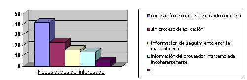

|
El plan de gestión de requisitos contiene información que se puede cubrir hasta un grado mayor o menor por otros
planes.
Consulte el apartado Producto de trabajo: Plan de gestión de requisitos, Personalización
para obtener orientación sobre la personalización.
Tal como se describe en la sección Documentación: Aplicación de la gestión de requisitos con casos de uso, la gestión
de requisitos es importante para garantizar el éxito del proyecto. Las causas que se citan más habitualmente para
el fallo de un proyecto incluyen:
-
Falta de entrada de usuario
-
Requisitos incompletos
-
Requisitos cambiantes
Los errores de requisitos también es posible que sean la clase más común de error, y son la corrección más cara.
Tener la relación correcta con los interesados puede ayudar con estos problemas. Los interesados son un origen
clave de entrada para definir los requisitos y comprender las prioridades de los requisitos. Muchos interesados,
sin embargo, no tienen la perspectiva sobre el impacto de coste y de planificación de las características solicitadas,
y por lo tanto la organización de desarrollo debe gestionar las expectativas de los interesados.
El establecimiento de las relaciones de los interesados incluye definir:
-
Las responsabilidades de los interesados: ¿El personal estará disponible en el sitio para las consultas? ¿A horas
convenidas?
-
La visibilidad de los interesados en los productos de trabajo del proyecto: ¿Visibilidad abierta para todos los
productos de trabajo? ¿Visibilidad sólo en hitos planificados?
Describe los elementos de rastreabilidad, y define cómo deben denominarse, marcarse y numerarse. Consulte el apartado
Concepto: Tipos de requisito y Concepto:
Rastreabilidad.
Los elementos de rastreabilidad más importantes se listan en Tarea:
Desarrollar un plan de gestión de requisitos.
Una rastreabilidad típica, con un conjunto limitado de productos de trabajo esenciales, se describe en Tarea: Desarrollar plan de gestión de requisitos.
Además de identificar los enlaces de rastreabilidad, debe especificar la cardinalidad de los enlaces. Algunas
restricciones comunes son:
-
Cada producto aprobado debe estar enlazado con uno o más requisitos suplementarios, o uno o más casos de prueba, o
ambos.
-
Cada requisito suplementario y cada sección de caso de uso debe estar enlazado con uno o más casos de prueba.
Una discusión más detallada sobre rastreabilidad se facilita en la documentación Estrategias de rastreabilidad para gestionar requisitos con un caso de uso.
A continuación se muestran algunos atributos de ejemplo que es posible que quiera seleccionar, organizados mediante los
tipos de requisito identificados en Tarea:
Desarrollar un plan de gestión de requisitos.
Necesidad del interesado
Origen: El interesado que origina el requisito. (Esto se puede implementar como rastreabilidad a un elemento
de rastreabilidad de "interesado".
Contribución: Indica la contribución del problema a la oportunidad empresarial global o problema que se está
solucionando en el proyecto. Porcentaje (0 a 100%). Todas las contribuciones no deben sumar más de 100%. A
continuación se muestra un ejemplo de Diagrama de
Pareto que muestra la contribución de cada una de las varias necesidades del interesado.

Características, requisitos suplementarios y casos de uso
Estado: Indica si el requisito se ha revisado y aceptado en el "canal oficial". Los valores de ejemplo son
propuesto, Rechazado, Aprobado.
Esto puede ser un estado contractual, o un conjunto de estados de un grupo de trabajo capaz de tomar decisiones
vinculantes.
Beneficio: La importancia del punto de vista de los interesados.
-
Crítico (o principal). Está relacionado con las tareas principales del sistema, sus funciones básicas,
las funciones para las que se está desarrollando. Si faltan, el sistema no puede cumplir su misión principal.
Dirigen el diseño arquitectónico y tienden a ser los casos de uso que se ejercen con más frecuencia.
-
Importante (o secundario). Está relacionado con el soporte de las funciones del sistema, como la
compilación de datos estadísticos, generación de informe, supervisión y pruebas de función. Si faltan, el
sistema todavía puede (unos instantes) cumplir la misión fundamental, pero con una calidad de servicio
degradada. En modelado, se adjuntará menos importancia a ellos que a los casos de uso críticos
-
Útil (interesante). Son funciones de "comodidad", que no se enlazan con la misión principal del sistema
pero que ayudan en su utilización o en el posicionamiento del mercado.
Esfuerzo: Esfuerzo estimado para implementar los requisitos.
Por ej., podrían ser categorías como Bajo, Medio, Alto. Por ej., Bajo = < 1 día, Medio = 1-20 días, Alto =
>20 días.
Para definir Esfuerzo, debe indicarse claramente qué costes (esfuerzo de gestión esfuerzo de prueba, esfuerzo de
requisitos, etc.) se incluye en el cálculo.
Tamaño: Líneas de código fuente (SLOC) estimadas que no son comentarios, excluyendo cualquier código de
prueba.
Es posible que desee distinguir entre SLOC nuevos y reutilizados, para computar mejor las estimaciones de coste.
Riesgo: % de probabilidad que la implementación del requisito encuentre sucesos
significativos no deseables como retrasos en la planificación, desbordamiento de los costes o cancelación.
Por ej., podrían ser categorías como Bajo, Medio, Alto. Por ej., Bajo = <10%, Medio = 10-50%, Alto =
>50%.
Otra opción de riesgo es supervisar separadamente la tecnología de riesgo - % de probabilidad de tener
dificultades graves al implementar el requisito porque la pérdida de experiencia en el dominio y/o las tecnologías
necesarias. El riesgo global se puede computar como suma ponderada basada en otros atributos, que incluyen
tamaño, esfuerzo, estabilidad, riesgo de tecnología, impacto arquitectónico, y complejidad organizativa.
Complejidad organizativa: Categorización del control sobre la organización que desarrolla el requisito.
-
Interno: Desarrollo interno en un sitio
-
Geográfico: Equipo distribuido geográficamente
-
Externo: Organización externa dentro de la empresa.
-
Proveedor: Subcontrato o compra de software desarrollado externamente.
Impacto arquitectónico: Indica cómo impactará
este requisito en la arquitectura de software.
-
Ninguno: No afecta a la arquitectura existente.
-
Amplía: Requiere la ampliación de la arquitectura existente.
-
Modifica: La arquitectura existente se debe cambiar para acomodar el requisito.
Estabilidad: Probabilidad de que este requisito cambie, o de que cambie la comprensión del requisito del
equipo de desarrollo. (>50% = Alta, 10..50% = Media, <10%=Baja)
Release de destino: El release de producto previsto en que se cumplirá el requisito. (Release1, Release1.1,
Release2, ...)
Nivel de peligro / gravedad: Capacidad de afectar a la salud, el bienestar o consecuencias económicas,
habitualmente como resultado de que software no pueda ejecutarse como es necesario.
-
Insignificante: No puede provocar heridas significativas al personal o ni daños en el equipamiento.
-
Marginal: Se puede controlar sin provocar heridas al personal ni daños graves en el sistema.
-
Crítico: Puede provocar heridas al personal o daños graves en el sistema, o requerirá acciones
correctivas inmediatas para la supervivencia del personal o del sistema.
-
Catastrófico: Puede causar heridas graves o la muerte, o la pérdida completa del sistema.
Los peligros también se pueden identificar como tipos de requisitos separados y vinculados con casos de uso
asociados. También puede realizar el seguimiento de la probabilidad de peligro, emprender acciones
correctivas y/o tomar medidas preventivas.
Interpretación: En algunos casos en que los requisitos forman un contrato formal, puede ser difícil y
costoso cambiar el texto de los requisitos. A medida que la organización de desarrollo obtiene una mejor
comprensión de un requisito, puede ser necesario adjuntar texto de interpretación, en lugar de cambiar
sencillamente el texto oficial del requisito.
Caso de uso
Además de lo anterior, también resulta útil realizar el seguimiento de los atributos de caso de uso siguientes:
% detallado: Grado hasta el que se ha elaborado el caso de uso:
-
10%: Se proporciona una descripción básica.
-
50%: Flujos principales documentados.
-
80%: Completado pero no revisado. Todas las condiciones previas y posteriores se han especificado
completamente.
-
100%: Revisado y aprobado.
Caso de prueba
Estado: Realiza el seguimiento durante el desarrollo de la prueba.
-
Sin actividad: No se ha cumplido ningún trabajo en el desarrollo de este caso de prueba.
-
Manual: Se ha creado y validado un script manual como capaz de verificar los requisitos asociados.
-
Automatizado: Se ha creado y validado un script automatizado como capaz de verificar los requisitos
asociados.
Atributos generales
Otros atributos de requisitos que tienen una aplicación general son:
-
Iteración planificada
-
Iteración real
-
Parte responsable
Los atributos se utilizan para realizar el seguimiento de la información asociada con un elemento de rastreabilidad,
habitualmente para objetivos de estado y de informes. Cada organización puede requerir información de seguimiento
específica exclusiva para su organización. Antes de asignar un atributo, debe tener en cuenta:
-
¿Quién proporcionará esta información?
-
¿Quién utilizará esta información, y por qué es útil?
-
¿El coste del seguimiento de esta información compensa el beneficio?
Los atributos esenciales para el seguimiento son Riesgo, Beneficio, Esfuerzo, Estabilidad e Impacto
arquitectónico , para permitir la prioridad de los requisitos para la gestión de ámbitos y para asignar requisitos
para las iteraciones. Se deben supervisar inicialmente en funciones, y posteriormente en todos los casos de uso y
requisitos suplementarios.
Tenga en cuenta la información derivada
Además de utilizar directamente los atributos de requisitos, es posible que desee derivar información de estos
atributos de requisitos mediante la rastreabilidad a otros tipos de requisito. Algunos patrones de derivación típicos
son:
-
Derivar hacia bajo - Vista la rastreabilidad anterior, imagine que la función del producto tiene un atributo
"Release de destino". Se puede derivar que cada Sección de caso de uso rastreada por esta función de producto
también debe estar disponible en o antes del release de destino especificado.
-
Derivar hacia arriba - Vista la rastreabilidad anterior, imagine que una sección de caso de uso tiene un
atributo "Esfuerzo estimado". El coste de una función de producto se puede estimar sumando el esfuerzo estimado de
las secciones de caso de uso que rastrea. Se debe utilizar con precaución, ya que varias funciones de producto
podrían correlacionarse con la misma Sección de caso de uso.
Por lo tanto, para asignar atributos de requisitos para tipos de requisitos, debe tener en cuenta:
-
¿Qué información / informes derivados queremos generar a partir de este atributo?
-
¿A qué nivel de la jerarquía de rastreabilidad debemos supervisar este atributo?
Dependencia de atributos
Algunos atributos sólo son aplicables a un cierto nivel de desarrollo. Por ejemplo, un atributo de esfuerzo estimado
para un caso de uso se puede reemplazar con estimaciones de esfuerzo en los elementos de diseño una vez que el caso de
uso está completamente representado en el diseño.
A continuación se muestran ejemplos de informes y medidas relacionados con los requisitos. Seleccionando el conjunto
necesario/deseado de informes y medidas para su proyecto, puede derivar los atributos necesarios para el plan de
gestión de requisitos.
|
Descripción del informe/medida
|
Utilizado para
|
|
Prioridad de desarrollo de casos de uso (lista de casos de uso ordenados por riesgo, beneficio,
esfuerzo, estabilidad e impacto arquitectónico).
|
Pueden ser listas ordenadas separadamente, o una única lista ordenada por una combinación ponderada de
estos atributos. Se utiliza para Tarea: Priorizar los casos de uso.
|
|
Porcentaje de funciones de cada categoría de estado.
|
Realiza el seguimiento del progreso durante la definición de la línea base del proyecto.
|
|
- clasificado por Release de destino
|
- realiza el seguimiento del progreso basándose en los release
|
|
- ponderado por Esfuerzo
|
- proporciona una medida más precisa del progreso.
|
|
Características ordenadas por riesgo
|
- identifica las características arriesgadas. Útil para gestión de ámbitos y para la
asignación de funciones a las iteraciones.
|
|
- clasificado por Release de destino, con Riesgo de desarrollo sumado por cada Release de destino
|
- útil para valorar si las características arriesgadas se han planificado pronto o tarde en el
proyecto.
|
|
Secciones de caso de uso ordenadas por estabilidad
|
- utilizado para decidir qué secciones de caso de uso deben estabilizarse.
|
|
- ponderado o ordenado por Afecta a la arquitectura
|
- útil para priorizar los casos de uso arquitectónicamente significativos y /o de alto esfuerzo
para que se estabilicen primero.
|
|
Requisitos con atributos no definidos
|
Cuando los requisitos se proponen por primera vez, puede no asignar inmediatamente todos los atributos
(por ej., utilizando un valor "No definido" por omisión). La Lista de comprobación: Especificación de requisitos de software
utiliza este informe para comprobar estos atributos no definidos.
|
|
Elementos de rastreabilidad con enlaces de rastreabilidad incompletos
|
Un informe de enlaces de rastreabilidad incorrectos o incompletos se utiliza para la Lista de comprobación: Especificación de requisitos de software.
|
Los cambios son inevitables, y deben estar planificados. Los cambios se producen porque:
-
Ha habido un cambio para solucionar un problema. Esto puede ser debido a nuevas regulaciones, presión económica,
cambios tecnológicos, etc.
-
Los interesados cambian de opinión o de percepciones sobre lo que quieren que hagan el sistema. Esto puede ser
debido a una serie de causas, que incluyen cambios en el personal responsable, una comprensión más profunda del
asunto, etc.
-
Si no se puede incluir a todos los interesados, o preguntar todas las preguntas correctas, cuando se definen los
requisitos originales.
Las estrategias para gestionar los requisitos de cambio incluyen:
-
Creación de la línea base de los requisitos
-
Establecimiento de un único canal para controlar el cambio
-
Mantenimiento de un historial de cambios
Creación de la línea base de los requisitos 
Hacia el final de la fase de elaboración, el analista de sistemas debe crear la línea base de todos los requisitos
conocidos. Esto se suele realizar garantizando que existe control de versión en los productos de trabajo de los
requisitos, e identificando el conjunto de productos de trabajo y sus versiones que forman la línea base.
El objetivo de la línea base no es congelar los requisitos. Es permitir la identificación, comunicación, estimación y
control de requisitos nuevos y modificados.
Consulte también Guía de la herramienta: Creación de línea base de un proyecto de Rational
RequisitePro.
Establecimiento de un único canal para controlar el cambio
Un deseo de cambio de un interesado no se puede asumir oficialmente para cambiar el presupuesto y la planificación. Se
debe iniciar una negociación o reconciliación del presupuesto antes de aprobar un cambio. A menudo, los cambios se
deben equilibrar entre ellos.
Es crucial que todos los cambios atraviesen el mismo canal, el comité de control de cambios (CCB), para determinar su
impacto en el sistema y para recibir la aprobación oficial. El mecanismo para proponer un cambio es enviar una Solicitud de cambio, que se revisa en el CCB.
Para obtener información adicional, consulte el apartado Tarea: Establecer un proceso de control de cambios.
Mantenimiento de un historial de cambios
Es beneficioso mantener una pista de auditoría de los cambios de los requisitos individuales. Este historial de cambio
permite ver todos los cambios anteriores a los requisitos y los cambios de los valores de atributos, y los fundamentos
del cambio. Esto puede resultar útil para valorar la estabilidad real de los requisitos, e identificar los casos donde
el proceso de control de cambios puede no funcionar (por ej., identificando los cambios de requisitos que no se
revisaron y aprobaron adecuadamente).
|